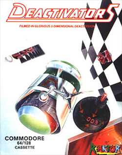
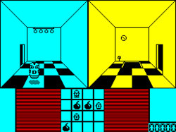

Deactivators
Research in progress. Deactivators appeared in 1986 under the Reaktor label. The catalogue credits Tigress. Known catalogue formats: Commodore 64, Amstrad CPC, ZX Spectrum. This holding page will be expanded as contemporary material and first-hand recollections are reviewed.